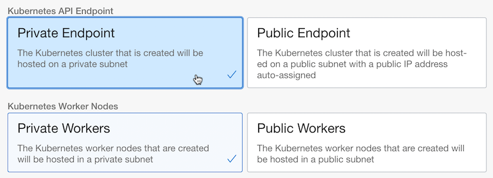
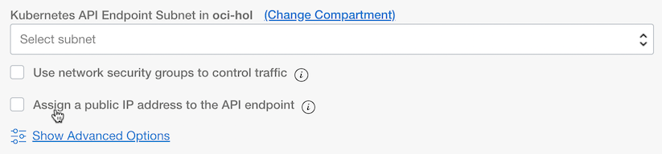
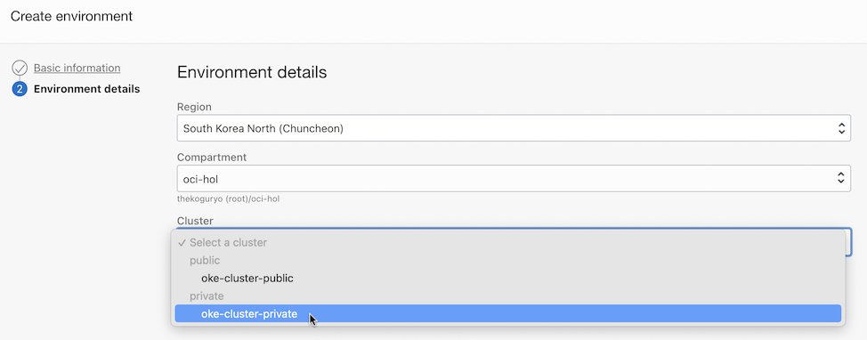
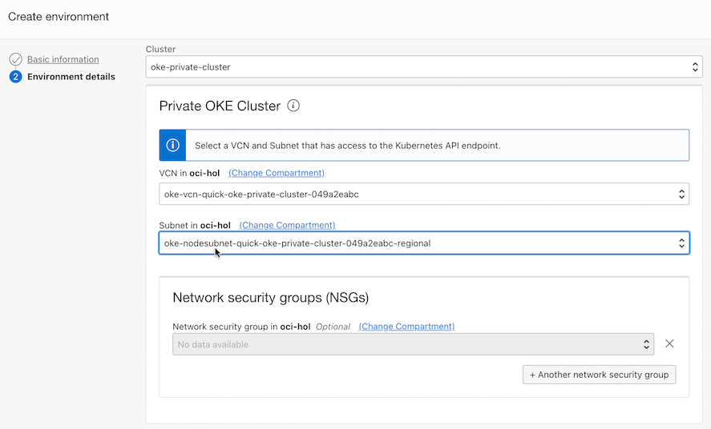
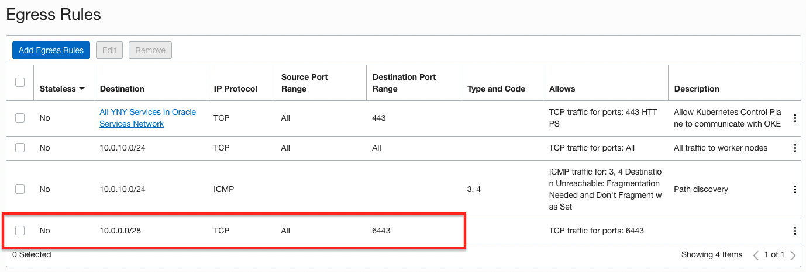
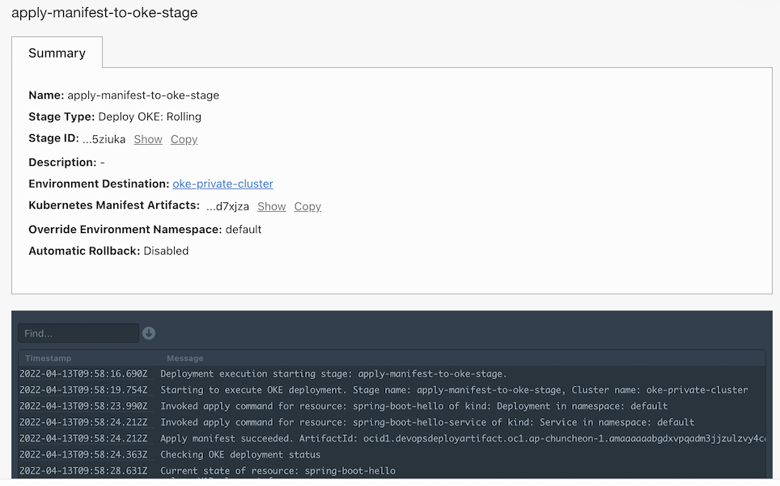

DevOps now supports deployment to private Kubernetes API endpoints
DevOps 서비스가 OKE 쿠버네티스 클러스터의 API의 프라이빗 IP로 연결하는 것을 지원합니다.
OKE 클러스터는 프라이빗 IP가 기본적으로 할당되고, 생성시 선택에 따라 퍼블릭 IP가 추가적으로 할당됩니다. DevOps 서비스에서는 이제 Private Endpoint로 만든 Private Cluster에 배포하는 것을 지원합니다.
-
Quick Create 모드로 생성시
- Private Endpoint: API 엔드포인트에 프라이빗 IP만 할당됨
- Public Endpoint: API 엔드포인트에 퍼블릭 IP 및 프라이빗 IP 모두 할당됨

-
Custom Create 모드로 생성시
- API 엔드포인트에 프라이빗 IP가 기본 할당됨. 옵션 선택시 퍼블릭 IP 할당됨.

DevOps 서비스에서 OKE Private Cluster에 배포하기
배포 환경 추가
-
DevOps 서비스에서 배포를 위해서는 환경(Environment)을 추가해야 합니다. 이때 OKE 유형을 택하면, 생성된 클러스터 중에서 아래 그림과 같이 이제 Private Endpoint를 가진 Private Cluster도 선택할 수 있습니다.

-
Private Cluster를 선택한 다음, 대상 Private Cluster의 Kubernetes API Endpoint로 접근 가능한 서브넷을 지정합니다. (원문, If you select a private cluster, then select the VCN and subnet available to the Kubernetes API endpoint.)
-
Quick Create로 생성된 클러스터 기준, nodesubnet을 서브넷으로 선택하면, 추가 설정없이 배포됩니다.

-
Quick Create로 생성된 클러스터 기준, k8sApiEndpoint 서브넷를 선택한 경우에 Security Rule에 자기 서브넷:6443으로 나갈 수 있는 Egress Rule 추가가 필요합니다. 그렇지 않은 경우 연결 오류가 발생합니다.

-
Security Rule
문서에는 DevOps가 속한 서비스 네트워크에서 들어올수 있는 Ingress Rule을 필요하면 추가하라고 하는데, Quic Create 생성된 클러스터 기준 테스트시 추가 작업없이 동작하였습니다.
OKE 배포 환경 추가시 nodesubnet을 선택하면, nodesubnet은 당연히 API endpoint가 통신이 되도록 구성되어 있을 테니, 별다른 추가 설정없이 동작하였습니다.
배포 결과

이 글은 개인으로서, 개인의 시간을 할애하여 작성된 글입니다. 글의 내용에 오류가 있을 수 있으며, 글 속의 의견은 개인적인 의견입니다.